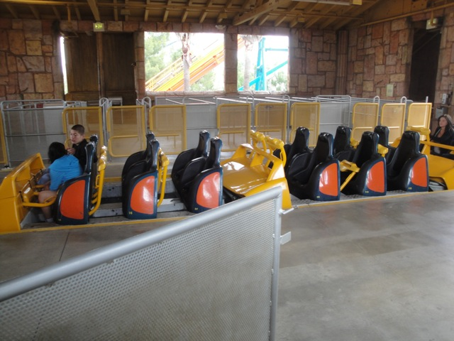
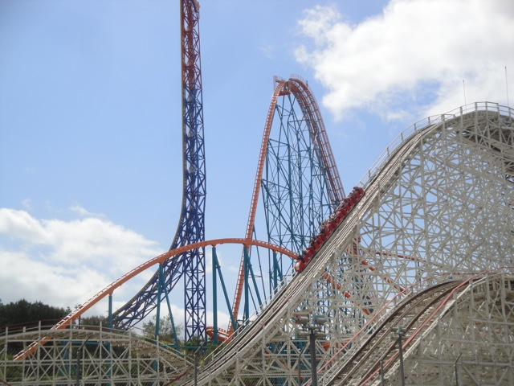
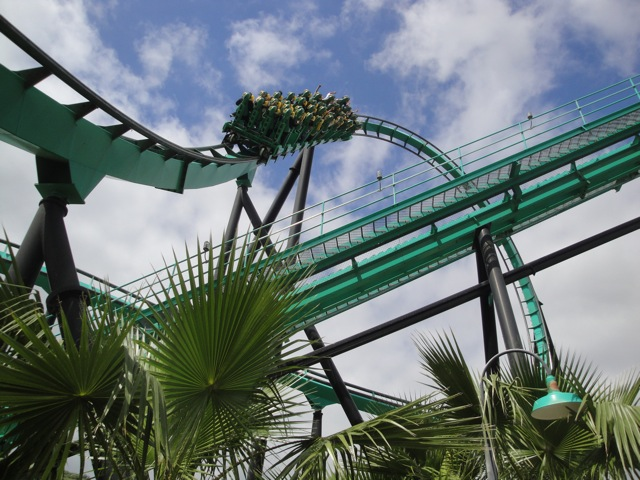
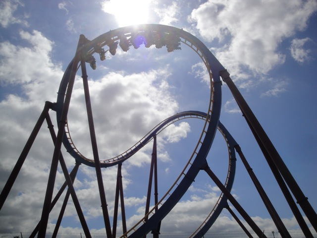
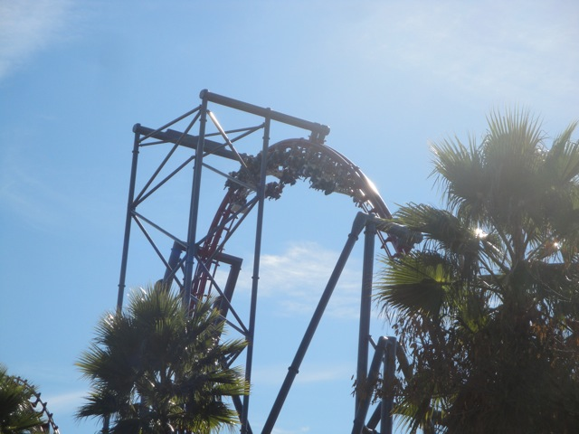

Spring 2011 Photos
Six Flags Magic Mountain Disneyland Resort
 Well, Spring Break has come once again, and in typical Incrediblecoasters fashion, we decided to head over to a few theme parks. We started out at Six Flags Magic Mountain just for the hell of it. And as always, it started with a Goliath Marathon.
Well, Spring Break has come once again, and in typical Incrediblecoasters fashion, we decided to head over to a few theme parks. We started out at Six Flags Magic Mountain just for the hell of it. And as always, it started with a Goliath Marathon.

These Goliath marathons still don't get old.
 Dude. Scream was running AMAZING today. It was running really slow and had some crazy hangtime in the inversions, plus the mid course brakes were off. Scream hadn't been running this well in years.
Dude. Scream was running AMAZING today. It was running really slow and had some crazy hangtime in the inversions, plus the mid course brakes were off. Scream hadn't been running this well in years.
 In other Six Flags Magic Mtn news, Collosus finally reopened. =)
In other Six Flags Magic Mtn news, Collosus finally reopened. =)

Dude. Retrcked Collosus was weird.
 It's totally smoother where they retracked it, but there's just something weird there now that I can't explain. Oh well. I'm sure everyone else will love the change.
It's totally smoother where they retracked it, but there's just something weird there now that I can't explain. Oh well. I'm sure everyone else will love the change.
 You can totally see where they retracked it in this picture.
You can totally see where they retracked it in this picture.

Up next was Riddlers Revenge. It was running good today, though not quite as good as it was at Westcoast Bash.
All right. Time for another Incrediblecoasters Dumbass Moment. We ended up turning here in Goldrushers line instead of going up the ramp like your supposed to. We've been to SFMM like a bazillion times and we still made this mistake. It was a mindf*ck.
Yeah. We won't be riding Superman: Escape from Krypton today.
Holy Crap!!! Where did all these birds come from?
 And in other Roadrunner Express news, they finally got the footers down for the ride.
And in other Roadrunner Express news, they finally got the footers down for the ride.
Oh, and Pistachio Park finally opened up.
Hey, it could've been a lot worse. At least you still were able to have bacon.
You can totally see where they retracked it in this picture.

Dude, Scream was running so well today that we just had to marathon it.
 Better than normal Scream Awesomeness.
Better than normal Scream Awesomeness.
Hey Pink Sweater Girl. We need you over here.

And as always, we rode X2 because it was awesome.
Disneyland Resort
Home